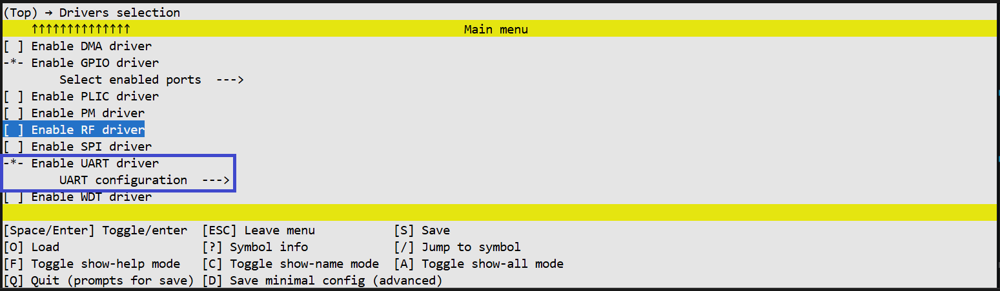
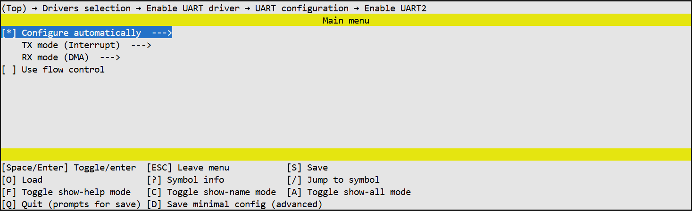

UART 驱动#
概述#
UART 驱动提供了配置和使用异步串口的接口。它支持通信参数配置（波特率、校验位、停止位），引脚复用（Pinmux），数据发送（阻塞模式）和数据接收（阻塞和非阻塞中断模式）。它还支持硬件流控制（RTS/CTS）。
主要特性：
UART 参数配置（波特率、校验位、停止位）
TX/RX 和 RTS/CTS 引脚复用
数据发送（阻塞 / PLIC / DMA 模式）
数据接收（阻塞 / PLIC / DMA 模式 + 回调）
硬件流控制（RTS/CTS）
数据类型与枚举#
UART 模块标识符#
enum tlk_uart_module — 根据 UNISDK_UART_COUNT 和已启用的实例自动生成。值包括 UART0、UART1 等。
校验位#
enum tlk_uart_parity
值 |
描述 |
|---|---|
|
无校验 |
|
偶校验 |
|
奇校验 |
停止位#
enum tlk_uart_stop_bit
值 |
描述 |
|---|---|
|
1 个停止位 |
|
1.5 个停止位 |
|
2 个停止位 |
RX 超时倍数#
enum tlk_uart_rx_timeout_mul
RX 超时时长的倍数。总 RX 超时时间 =（一个 UART 帧时长）× 倍数。
值 |
描述 |
|---|---|
|
1 倍帧时长 |
|
2 倍帧时长 |
|
3 倍帧时长 |
|
4 倍帧时长 |
UART 配置结构体#
struct tlk_uart_config
包含初始化 UART 模块所需所有配置参数的结构体。与 tlk_uart_configure 和 tlk_uart_configure_pinmux 配合使用。
字段 |
类型 |
描述 |
|---|---|---|
|
|
通信速率，单位为波特 |
|
|
校验模式 |
|
|
停止位数 |
|
|
RX 超时倍数 |
|
|
TX 端口和引脚 |
|
|
RX 端口和引脚 |
操作状态#
enum tlk_uart_status
驱动函数用于指示操作结果的返回码。
值 |
描述 |
|---|---|
|
操作成功完成。 |
|
操作超时。 |
|
常规执行错误。 |
流控制模式#
enum tlk_uart_flow_control
值 |
描述 |
|---|---|
|
流控制已禁用。 |
|
仅 RTS 信号。 |
|
仅 CTS 信号。 |
|
完整 RTS/CTS 流控制。 |
流控制极性#
enum tlk_uart_flow_polarity
定义 RTS 和 CTS 信号的有效电平逻辑。
值 |
描述 |
|---|---|
|
低电平有效。 当 CTS 为低电平时 UART 停止发送，并将 RTS 置为低电平以停止接收。 |
|
高电平有效。 当 CTS 为高电平时 UART 停止发送，并将 RTS 置为高电平以停止接收。 |
流控制配置结构体#
struct tlk_uart_flow_control_config
包含 UART 硬件流控制所有配置参数的结构体。与 tlk_uart_configure_flow_control 和 tlk_uart_configure_flow_control_pinmux 配合使用。
字段 |
类型 |
描述 |
|---|---|---|
|
|
流控制模式（RTS/CTS） |
|
|
RTS/CTS 信号的有效电平 |
|
|
RTS 端口和引脚 |
|
|
CTS 端口和引脚 |
发送处理函数类型#
tlk_uart_tx_handler_t
函数指针类型，用于中断和 DMA 模式下数据发送完成时调用的回调函数。
typedef void (*tlk_uart_tx_handler_t)(void);
接收处理函数类型#
tlk_uart_rx_handler_t
函数指针类型，用于中断和 DMA 模式下数据接收完成时调用的回调函数。
typedef void (*tlk_uart_rx_handler_t)(uint32_t rx_count);
驱动 API#
tlk_uart_configure#
使用提供的配置初始化 UART 模块。
void tlk_uart_configure(enum tlk_uart_module uart_num,
struct tlk_uart_config *config);
参数：
参数 |
类型 |
描述 |
|---|---|---|
|
|
UART 模块索引。 |
|
|
指向包含波特率、校验位、停止位和引脚分配的配置结构体的指针。 |
返回值： 无
tlk_uart_configure_pinmux#
配置 UART TX/RX 引脚复用。
void tlk_uart_configure_pinmux(enum tlk_uart_module uart_num,
struct tlk_uart_config *config);
参数：
参数 |
类型 |
描述 |
|---|---|---|
|
|
UART 模块索引。 |
|
|
指向包含 TX 和 RX 引脚分配的配置结构体的指针。 |
返回值： 无
tlk_uart_send_bytes#
发送数据缓冲区。
enum tlk_uart_status tlk_uart_send_bytes(enum tlk_uart_module uart_num,
const uint8_t *buff, uint32_t buff_size,
tlk_uart_tx_handler_t tx_handler, uint32_t timeout_us);
tlk_uart_receive_bytes#
接收数据缓冲区。接收完成时会调用提供的处理函数。
enum tlk_uart_status tlk_uart_receive_bytes(enum tlk_uart_module uart_num,
uint8_t *buff, uint32_t buff_size,
tlk_uart_rx_handler_t rx_handler);
参数：
参数 |
类型 |
描述 |
|---|---|---|
|
|
UART 模块索引。 |
|
|
指向接收缓冲区的指针。 |
|
|
要接收的字节数。 |
|
|
接收完成后调用的回调函数。 |
返回值： enum tlk_uart_status — 返回 TLK_UART_OK。
tlk_uart_configure_flow_control#
配置指定 UART 模块的流控制。默认禁用。应在 tlk_uart_configure 之后调用。
void tlk_uart_configure_flow_control(enum tlk_uart_module uart_num,
struct tlk_uart_flow_control_config *config);
参数：
参数 |
类型 |
描述 |
|---|---|---|
|
|
UART 模块索引。 |
|
|
指向流控制配置结构体的指针。 |
返回值： 无
tlk_uart_configure_flow_control_pinmux#
配置 UART RTS 和 CTS 引脚复用。
void tlk_uart_configure_flow_control_pinmux(enum tlk_uart_module uart_num,
struct tlk_uart_flow_control_config *config);
参数：
参数 |
类型 |
描述 |
|---|---|---|
|
|
UART 模块索引。 |
|
|
指向包含 RTS 和 CTS 引脚分配的流控制配置结构体的指针。 |
返回值： 无
传输模式#
每个 UART 实例可以独立配置其传输模式：
模式 |
Kconfig 值 |
描述 |
|---|---|---|
阻塞 |
|
同步等待，带超时 |
中断 |
|
中断驱动，自动填充 FIFO |
DMA |
|
DMA 驱动，CPU 零负载 |
Kconfig 配置#
全局选项#
**TLK_UART_SELECTED** 表示系统中至少启用了一个 UART 实例。当任何 UART{i}_ENABLED` 选项启用时，此选项会自动被选中。
TLK_UART_USED_AUTO_CONFIG 表示系统中启用了自动 UART 配置。当任何 UART 实例启用了 UART{i}_AUTO_CONFIG 时，此选项会自动被选中。
TLK_UART_USED_IRQ 表示至少一个 UART 实例需要 PLIC 功能。当任何 UART 实例启用了 UART{i}_USED_IRQ 或 UART{i}_USED_DMA 时，此选项会自动被选中。
TLK_UART_USED_DMA 表示至少一个 UART 实例需要 DMA 功能。当任何 UART 实例启用了 UART{i}_USED_DMA 时，此选项会自动被选中。
TLK_UART_USED_PM_DEVICE 表示系统中启用了 UART 电源管理支持。当任何 UART 实例启用了 UART{i}_PM_DEVICE 时，此选项会自动被选中。
TLK_UART_USED_FLOW_CONTROL 表示系统中启用了硬件流控制（RTS/CTS）。当任何 UART 实例启用了 UART{i}_FLOW_CONTROL 时，此选项会自动被选中。
逐实例配置#
每个 UART 实例（i = 0, 1, 2...）支持以下分层配置：
graph TD
UART["UART{i}_ENABLED<br/>Enables UART module"] --> AUTO["UART{i}_AUTO_CONFIG<br/>Auto configuration"]
UART --> TX["UART{i}_TX_MODE<br/>Transmission mode"]
UART --> RX["UART{i}_RX_MODE<br/>Reception mode"]
UART --> PM["UART{i}_PM_DEVICE<br/>Power management support"]
UART --> SLEEP["UART{i}_PREVENT_SLEEP<br/>Prevent sleep during RX"]
UART --> DEBUG["TLK_DEBUG_PRINT<br/>Debug output"]
AUTO --> BAUD["UART{i}_BAUDRATE<br/>Default: 115200"]
AUTO --> PARITY["UART{i}_PARITY<br/>Parity mode"]
AUTO --> STOP["UART{i}_STOP_BIT<br/>Stop bits"]
AUTO --> FLOW["UART{i}_FLOW_CONTROL_TYPE<br/>Flow control"]
AUTO --> FPOL["UART{i}_FLOW_POLARITY<br/>Flow polarity"]
PARITY --> NONE["TLK_UART_PARITY_NONE"]
PARITY --> EVEN["TLK_UART_PARITY_EVEN"]
PARITY --> ODD["TLK_UART_PARITY_ODD"]
STOP --> SB1["TLK_UART_STOP_BIT_ONE"]
STOP --> SB15["TLK_UART_STOP_BIT_ONE_DOT_FIVE"]
STOP --> SB2["TLK_UART_STOP_BIT_TWO"]
FLOW --> FNONE["TLK_UART_FLOW_NONE"]
FLOW --> FRTS["TLK_UART_FLOW_RTS"]
FLOW --> FCTS["TLK_UART_FLOW_CTS"]
FLOW --> FRTSCTS["TLK_UART_FLOW_RTS_CTS"]
FPOL --> ALOW["TLK_UART_ACTIVE_LOW (Default)"]
FPOL --> AHIGH["TLK_UART_ACTIVE_HIGH"]
TX --> TXB["TLK_UART_XFER_BLOCKING"]
TX --> TXI["TLK_UART_XFER_IRQ"]
TX --> TXD["TLK_UART_XFER_DMA"]
RX --> RXB["TLK_UART_XFER_BLOCKING"]
RX --> RXI["TLK_UART_XFER_IRQ"]
RX --> RXD["TLK_UART_XFER_DMA"]
DEBUG --> DBG_UART["TLK_DEBUG_PRINT_UART<br/>Which UART instances"]
DEBUG --> DBG_BUF["TLK_DEBUG_PRINT_BUFFER_SIZE<br/>Default: 256 bytes"]
在 menuconfig 中查看#

图 1. UART 驱动配置
图 2. UART 实例配置 图 3. UART 实例自动配置选项
图 3. UART 实例自动配置选项
 图 4. UART 调试配置
图 4. UART 调试配置